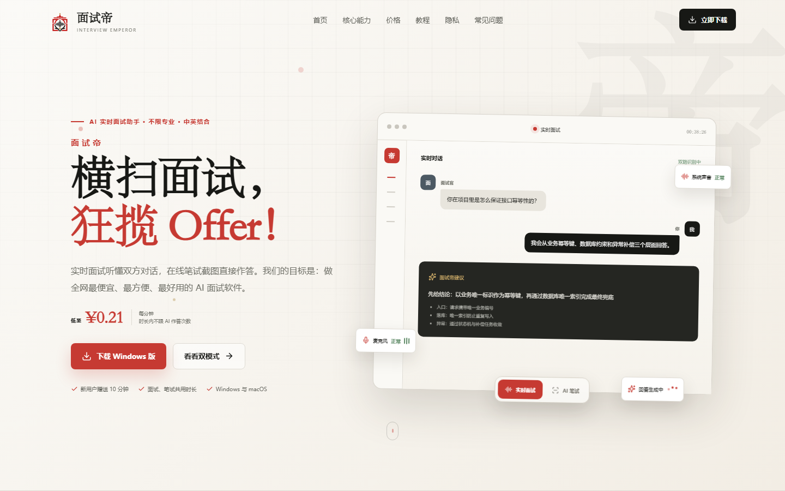
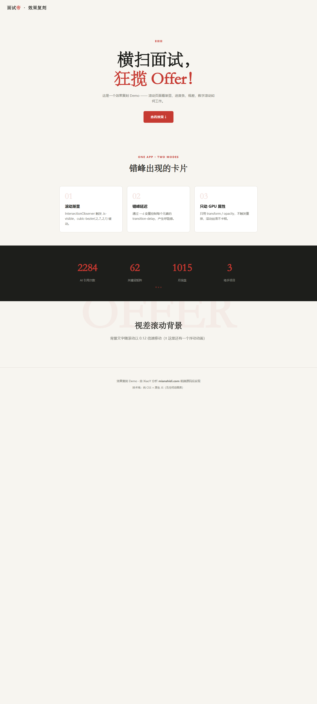

WEBSITE DEEP ANALYSIS
用一个真实案例，把"高级感"拆成可复用的技术配方。
本看板本身就用分析出的技术构建 —— 学到了就用。
对比常见做法：不用 React/Vue，不用 GSAP，不加载字体文件。
/_astro/）—— 默认零 JS 输出@font-face 数量 = 0，全靠系统字体栈（"Songti SC" 中文宋体做标题）clamp() 流式自适应避开烂大街的冷色科技风，走"纸质质感"路线 —— 这是高级感的第一来源。
用 easeOutCubic 数字滚动展示（学自面试帝）
标 ★ 的是最容易忽略、也最能出彩的。
Chrome headless 实拍，验证"源码分析结论 = 真实效果"。


直接抄进自己的项目。
IntersectionObserver({threshold:.16}) + .is-visible + transition:.65s cubic-bezier(.2,.7,.2,1)style="--d:.12s" + transition-delay:var(--d,0s) —— 呼吸感的来源1-(1-p)**3（easeOutCubic）+ rAF + 1.1stop:0 → top:100% + opacity 淡入淡出background-position:-200% → 0scale(2.4)rotate(-24°) → scale(1)rotate(-8°)animation-delay:calc(var(--i)*N)transform:scaleX()，不用 width（GPU 加速）passive:true"Songti SC" + "PingFang SC"clamp() + grid auto-fit能指出原站问题，说明分析足够深。
❌ 无 <noscript> 降级
所有 .reveal-on-scroll 元素初始 opacity:0，靠 JS 加类才显示。
JS 一旦失败（禁用/加载错误），全部内容永久不可见 —— 这是可用性与 SEO 风险。
✅ 修复方法（我的 Demo 已采用）：
<noscript><style>.reveal-on-scroll{opacity:1!important;transform:none!important}</style></noscript>